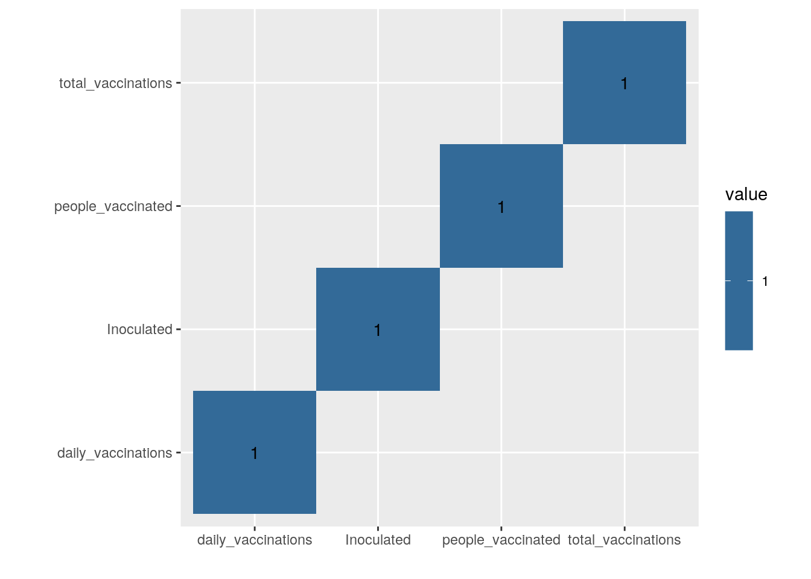
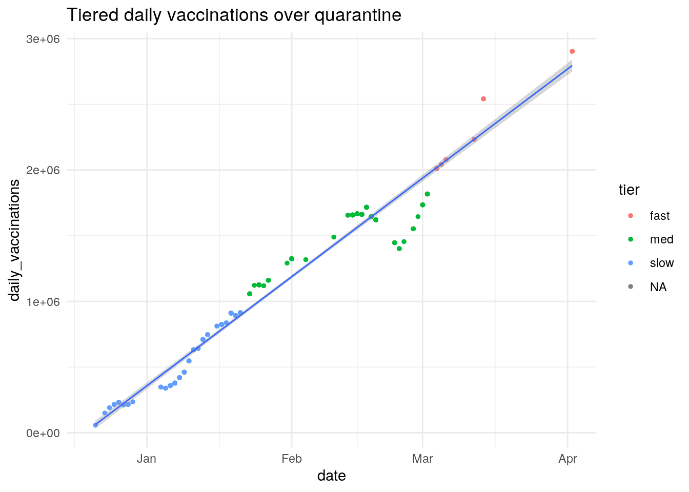
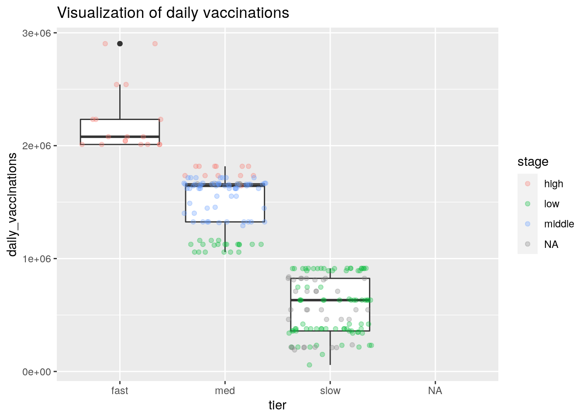
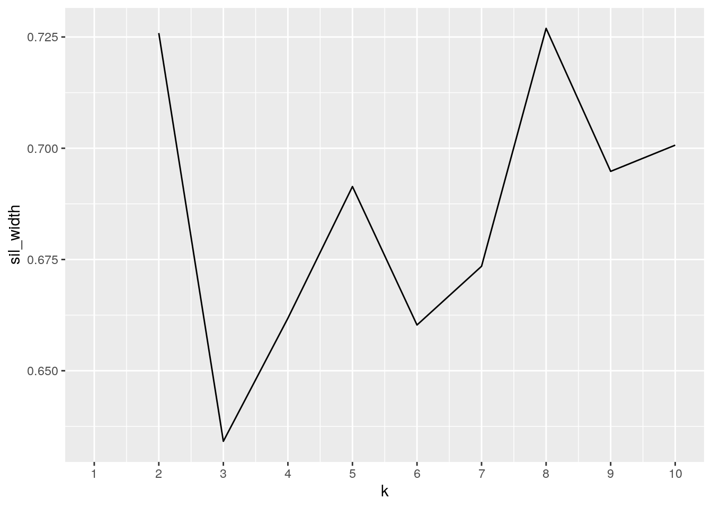
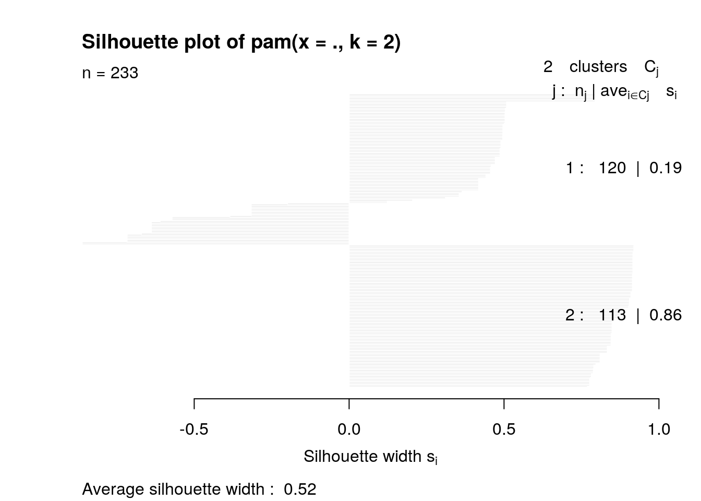

The inspiration behind picking these two datasets was that they were main focus in life during quarantine, Netflix and keeping track of COVID-19. My Netflix data set has every show I watched along with the date, while my US vacciantion dataset has the total vaccinations, people vaccinated, and the daily vaccinations given from December 12 2020 until April 2nd 2021.The Netlfix viewing history was graciously given to me by my professor, which I acquired through Netflix. The US vaccination data was aquired through the website kaggle.com. Both datasets are interesting to me as I inquire whether the my Netflix viewing trends somehow correlate with US vaccination rate, such as whether I began binging a show whenever US vaccination rates began to increase substantially. Although I expect to see little correlation between the two, I am interested in finding out the US vaccination trends and if they changed along with my viewing tendencies, as well viewing the trends when I myself was vaccinated. Note: The data in the column “daily_vaccinated” refers only to those who received the Johnson&Johnson vaccine which is one dose, however all other data columns are for the country as a whole regardless of vaccine.
library(tidyverse)
library(dplyr)
library(ggplot2)
library(cluster)
Netflix_History_ <- read.csv("Netflix1.csv")
US_Vaccinations_ <- read.csv("USVaccinations1.csv")
Netflix_History_$date <- as.Date(Netflix_History_$date, format = "%m/%d/%y")
US_Vaccinations_$date <- as.Date(US_Vaccinations_$date, format = "%m/%d/%y")Net <- Netflix_History_
US <- US_Vaccinations_
joined <- Net %>% inner_join(US)I joined both datasets using inner_join because my Netflix data dates greatly outnumbers the US vaccination data. Also, the data is more parsimonious and cohesive with an inner join as there are minimal NA’s compared to the other types of joins. To start, Netlfix History had 631 obervations beginning in 3/1/2020, while US Vaccination had 105 observations, starting at 12/20/20. This resulted in a large number of observation lost in the Netlfix history dataset, which I surrendered because I’m more interested in my viewing history when the vaccinations already started.
icarly <- joined %>% pivot_longer(contains("_"))Removing the “country” variable becasue it is redundant
stateless <- joined %>% select(-country)Seeing the date where vaccination is crossed around 100,000,000 , and what I was watching
stateless %>% filter(between(total_vaccinations, 90999999, 1.1e+08))## Title date total_vaccinations
## 1 Jeopardy!: Season 34: Episode #7740 2021-03-14 105703501
## 2 Jeopardy!: Season 34: Episode #7606 2021-03-14 105703501
## 3 iCarly: Season 2: iGo to Japan 2021-03-12 98203893
## 4 iCarly: Season 2: iDate a Bad Boy 2021-03-12 98203893
## 5 iCarly: Season 2: iFight Shelby Marx 2021-03-12 98203893
## people_vaccinated daily_vaccinations
## 1 68884011 2541597
## 2 68884011 2541597
## 3 64071674 2233006
## 4 64071674 2233006
## 5 64071674 2233006Seeing when the most daily vaccinations was, (and what I was watching)
stateless %>% arrange(desc(daily_vaccinations))## Title date
## 1 Neon Genesis Evangelion: Season 1: Rain, After Running Away 2021-04-02
## 2 Studio 54 2021-04-02
## 3 Jeopardy!: Season 34: Episode #7740 2021-03-14
## 4 Jeopardy!: Season 34: Episode #7606 2021-03-14
## 5 iCarly: Season 2: iGo to Japan 2021-03-12
## 6 iCarly: Season 2: iDate a Bad Boy 2021-03-12
## 7 iCarly: Season 2: iFight Shelby Marx 2021-03-12
## 8 iCarly: Season 2: iQuit iCarly 2021-03-06
## 9 iCarly: Season 2: iPsycho 2021-03-06
## 10 iCarly: Season 2: iBloop 2021-03-06
## 11 Good Girls: Season 1: Atom Bomb 2021-03-05
## 12 Good Girls: Season 1: Borderline 2021-03-05
## 13 Good Girls: Season 1: Mo Money Mo Problems 2021-03-04
## 14 iCarly: Season 1: iPromote Tech-Foots 2021-03-04
## 15 iCarly: Season 1: iGot Detention 2021-03-04
## 16 iCarly: Season 1: iRue the Day 2021-03-04
## 17 Good Girls: Season 1: Pilot 2021-03-04
## 18 Behind Her Eyes: Limited Series: Chance Encounters 2021-03-04
## 19 New Girl: Season 6: Last Thanksgiving 2021-03-02
## 20 Emily in Paris: Season 1: Cancel Couture 2021-03-02
## total_vaccinations people_vaccinated daily_vaccinations
## 1 153631404 99565311 2903730
## 2 153631404 99565311 2903730
## 3 105703501 68884011 2541597
## 4 105703501 68884011 2541597
## 5 98203893 64071674 2233006
## 6 98203893 64071674 2233006
## 7 98203893 64071674 2233006
## 8 85008094 55547697 2079147
## 9 85008094 55547697 2079147
## 10 85008094 55547697 2079147
## 11 82572848 54035670 2042676
## 12 82572848 54035670 2042676
## 13 80540474 52855579 2010790
## 14 80540474 52855579 2010790
## 15 80540474 52855579 2010790
## 16 80540474 52855579 2010790
## 17 80540474 52855579 2010790
## 18 80540474 52855579 2010790
## 19 76899987 50732997 1817502
## 20 76899987 50732997 1817502
## [ reached 'max' / getOption("max.print") -- omitted 213 rows ]Seeing the new number of people inoculated after being vaccinated by the J&J each day I watched Netflix
inoc <- stateless %>% mutate(Inoculated = people_vaccinated +
daily_vaccinations)Seeing the average number of daily vaccinations from 12/20/20 until 4/3/2021
inoc %>% summarize(mean(daily_vaccinations, na.rm = T))## mean(daily_vaccinations, na.rm = T)
## 1 1105185Seeing the avergae number of dailt vaccinations based on what episode I was watching
show <- inoc %>% group_by(Title) %>% summarize(show_mean = mean(daily_vaccinations,
na.rm = T))Creating a categorical variable for when daily vaccinations reached 100,000/day, between 200,000 and 100,000, and greater than 200,000/day.
tiered <- inoc %>% mutate(tier = case_when(daily_vaccinations >
2e+06 ~ "fast", daily_vaccinations <= 2e+06 & 1e+06 <= daily_vaccinations ~
"med", daily_vaccinations < 1e+06 ~ "slow"))Creating a categorical variable for stages in Inoculation 0-25M being low, 25-50 being middle, and 50-100 being high.
narcos <- tiered %>% mutate(stage = case_when(Inoculated > 5e+07 ~
"high", Inoculated <= 5e+07 & 2.5e+07 <= Inoculated ~ "middle",
Inoculated < 2.5e+07 ~ "low"))Summary statistics for ‘total_vaccinations’ numerical variable grouped by the ‘tier’ categorical variable.
tiered %>% group_by(tier) %>% summarize(mean_totalvacc = mean(total_vaccinations,
na.rm = T), sd_totalvacc = sd(total_vaccinations, na.rm = T),
var_totalvacc = var(total_vaccinations, na.rm = T), min_totalvacc = min(total_vaccinations,
na.rm = T), max_totalvacc = max(total_vaccinations, na.rm = T))## # A tibble: 4 x 6
## tier mean_totalvacc sd_totalvacc var_totalvacc min_totalvacc max_totalvacc
## <chr> <dbl> <dbl> <dbl> <int> <int>
## 1 fast 95371906. 23003284. 5.29e14 80540474 153631404
## 2 med 48484800. 18128507. 3.29e14 20537990 76899987
## 3 slow 9385379. 5160387. 2.66e13 614117 17546374
## 4 <NA> 556208 0 0. 556208 556208Summary statistics for ‘Inoculated’ numeric variable grouped by ‘stage’ categorical variable.
narcos %>% group_by(stage) %>% summarize(mean_Inoc = mean(Inoculated,
na.rm = T), sd_Inoc = sd(Inoculated, na.rm = T), var_Inoc = var(Inoculated,
na.rm = T), min_Inoc = min(Inoculated, na.rm = T), max_Inoc = max(Inoculated,
na.rm = T))## # A tibble: 4 x 6
## stage mean_Inoc sd_Inoc var_Inoc min_Inoc max_Inoc
## <chr> <dbl> <dbl> <dbl> <dbl> <dbl>
## 1 high 59461957. 13099969. 1.72e14 50080776 102469041
## 2 low 11352673. 6039020. 3.65e13 672026 21849020
## 3 middle 38928253. 6380634. 4.07e13 25355581 48736916
## 4 <NA> NaN NA NA Inf -InfSummary statistics for ‘people_vaccinated’ numerical variable grouped by both ‘stage’ and ‘tier’ categorical variables.
narcos %>% group_by(stage, tier) %>% summarize(mean_pplvac = mean(people_vaccinated,
na.rm = T), sd_pplvac = sd(people_vaccinated, na.rm = T),
quantile_pplvac = quantile(people_vaccinated, na.rm = T),
min_pplvac = min(people_vaccinated, na.rm = T), max_pplvac = max(people_vaccinated,
na.rm = T))## # A tibble: 40 x 7
## # Groups: stage, tier [8]
## stage tier mean_pplvac sd_pplvac quantile_pplvac min_pplvac max_pplvac
## <chr> <chr> <dbl> <dbl> <dbl> <dbl> <dbl>
## 1 high fast 62275643. 14717082. 52855579 52855579 99565311
## 2 high fast 62275643. 14717082. 52855579 52855579 99565311
## 3 high fast 62275643. 14717082. 55547697 52855579 99565311
## 4 high fast 62275643. 14717082. 64071674 52855579 99565311
## 5 high fast 62275643. 14717082. 99565311 52855579 99565311
## 6 high med 50141202. 719312. 48435536 48435536 50732997
## 7 high med 50141202. 719312. 49772180 48435536 50732997
## 8 high med 50141202. 719312. 50252588. 48435536 50732997
## 9 high med 50141202. 719312. 50732997 48435536 50732997
## 10 high med 50141202. 719312. 50732997 48435536 50732997
## # … with 30 more rowsnarcos %>% select_if(is.numeric) %>% cor %>% as.data.frame() %>%
rownames_to_column %>% pivot_longer(-1) %>% na.omit %>% ggplot(aes(rowname,
name, fill = value)) + geom_tile() + geom_text(aes(label = round(value,
2))) + xlab("") + ylab("") + coord_fixed()
cormat <- narcos %>% select_if(is.numeric) %>% cor(use = "pair")
cormat## total_vaccinations people_vaccinated daily_vaccinations
## total_vaccinations 1.0000000 0.9973716 0.9517153
## people_vaccinated 0.9973716 1.0000000 0.9675447
## daily_vaccinations 0.9517153 0.9675447 1.0000000
## Inoculated 0.9970012 0.9999704 0.9694605
## Inoculated
## total_vaccinations 0.9970012
## people_vaccinated 0.9999704
## daily_vaccinations 0.9694605
## Inoculated 1.0000000ggplot(data = narcos, aes(x = date, y = daily_vaccinations)) +
geom_point(size = 1, aes(color = tier)) + theme_minimal() +
geom_smooth(method = "lm", size = 0.5) + ggtitle("Tiered daily vaccinations over quarantine") As we can see from the graph above the daily vaccination rate has been steadily increasing throughout the months. The ‘slow’ tier ended towards the middle of Feburary while the ‘med’ tier ended in early March. From the linear regression line we can clearly see a positive regression line correlating with the data, clearly signifying the a positive increase in the amount of vaccinations administered in the US over a few months.
avgdaily <- narcos %>% group_by(tier) %>% mutate(avg_dailyvac = mean(daily_vaccinations,
na.rm = T))
ggplot(avgdaily, aes(x = tier, y = daily_vaccinations)) + geom_boxplot() +
geom_jitter(alpha = 0.3, aes(color = stage)) + ggtitle("Visualization of daily vaccinations") As seen with the above graph, tiers were distributed evenly, with stages existing mostly between bosxplots except for the ‘high’ boxplot. There exists outliers, however mostly within the ‘high’ boxplot. Overall the ‘med’ boxlot was the most varied in terms of stages with all stages existing within the ‘med’ boxplot, signifying rapid change in vaccinations durin that time period. k-means
library(cluster)
na.omit(avgdaily)## # A tibble: 191 x 9
## # Groups: tier [3]
## Title date total_vaccinati… people_vaccinat… daily_vaccinati…
## <fct> <date> <int> <int> <int>
## 1 Neon… 2021-04-02 153631404 99565311 2903730
## 2 Stud… 2021-04-02 153631404 99565311 2903730
## 3 Jeop… 2021-03-14 105703501 68884011 2541597
## 4 Jeop… 2021-03-14 105703501 68884011 2541597
## 5 iCar… 2021-03-12 98203893 64071674 2233006
## 6 iCar… 2021-03-12 98203893 64071674 2233006
## 7 iCar… 2021-03-12 98203893 64071674 2233006
## 8 iCar… 2021-03-06 85008094 55547697 2079147
## 9 iCar… 2021-03-06 85008094 55547697 2079147
## 10 iCar… 2021-03-06 85008094 55547697 2079147
## # … with 181 more rows, and 4 more variables: Inoculated <int>, tier <chr>,
## # stage <chr>, avg_dailyvac <dbl>avgdaily[complete.cases(avgdaily), ]## # A tibble: 191 x 9
## # Groups: tier [3]
## Title date total_vaccinati… people_vaccinat… daily_vaccinati…
## <fct> <date> <int> <int> <int>
## 1 Neon… 2021-04-02 153631404 99565311 2903730
## 2 Stud… 2021-04-02 153631404 99565311 2903730
## 3 Jeop… 2021-03-14 105703501 68884011 2541597
## 4 Jeop… 2021-03-14 105703501 68884011 2541597
## 5 iCar… 2021-03-12 98203893 64071674 2233006
## 6 iCar… 2021-03-12 98203893 64071674 2233006
## 7 iCar… 2021-03-12 98203893 64071674 2233006
## 8 iCar… 2021-03-06 85008094 55547697 2079147
## 9 iCar… 2021-03-06 85008094 55547697 2079147
## 10 iCar… 2021-03-06 85008094 55547697 2079147
## # … with 181 more rows, and 4 more variables: Inoculated <int>, tier <chr>,
## # stage <chr>, avg_dailyvac <dbl>toa <- avgdaily %>% select(total_vaccinations, daily_vaccinations,
Inoculated, -tier)
pamdat <- (toa) %>% select(daily_vaccinations, total_vaccinations,
Inoculated)
pamdat1 <- na.omit(pamdat)
sil_width <- vector()
k = 2
for (i in 2:10) {
pamfit <- pam(pamdat1, k = i)
sil_width[i] <- pamfit$silinfo$avg.width
}
ggplot() + geom_line(aes(x = 1:10, y = sil_width)) + scale_x_continuous(name = "k",
breaks = 1:10)
pam1 <- avgdaily %>% pam(k = 2)
pam1## Medoids:
## ID Title date total_vaccinations people_vaccinated daily_vaccinations
## [1,] 66 464 18674 NA NA 1662106
## [2,] 180 182 18637 NA NA 546636
## Inoculated tier stage avg_dailyvac
## [1,] NA NA NA 1508903.3
## [2,] NA NA NA 570178.8
## Clustering vector:
## [1] 1 1 1 1 1 1 1 1 1 1 1 1 1 1 1 1 1 1 1 1 1 1 1 1 1 1 1 1 1 1 1 1 1 1 1 1 1
## [38] 1 1 1 1 1 1 1 1 1 1 1 1 1 1 1 1 1 1 1 1 1 1 1 1 1 1 1 1 1 1 1 1 1 1 1 1 1
## [75] 1 1 1 1 1 1 1 1 1 1 1 1 1 1 1 1 1 1 1 1 1 1 1 1 1 1
## [ reached getOption("max.print") -- omitted 133 entries ]
## Objective function:
## build swap
## 444378.6 392975.3
##
## Available components:
## [1] "medoids" "id.med" "clustering" "objective" "isolation"
## [6] "clusinfo" "silinfo" "diss" "call" "data"pam1## Medoids:
## ID Title date total_vaccinations people_vaccinated daily_vaccinations
## [1,] 66 464 18674 NA NA 1662106
## [2,] 180 182 18637 NA NA 546636
## Inoculated tier stage avg_dailyvac
## [1,] NA NA NA 1508903.3
## [2,] NA NA NA 570178.8
## Clustering vector:
## [1] 1 1 1 1 1 1 1 1 1 1 1 1 1 1 1 1 1 1 1 1 1 1 1 1 1 1 1 1 1 1 1 1 1 1 1 1 1
## [38] 1 1 1 1 1 1 1 1 1 1 1 1 1 1 1 1 1 1 1 1 1 1 1 1 1 1 1 1 1 1 1 1 1 1 1 1 1
## [75] 1 1 1 1 1 1 1 1 1 1 1 1 1 1 1 1 1 1 1 1 1 1 1 1 1 1
## [ reached getOption("max.print") -- omitted 133 entries ]
## Objective function:
## build swap
## 444378.6 392975.3
##
## Available components:
## [1] "medoids" "id.med" "clustering" "objective" "isolation"
## [6] "clusinfo" "silinfo" "diss" "call" "data"plot(pam1, which = 2) In terms of Dimensionality Reduction I performed the kmeans/clustering procedure in order to find the distances between my centers. The graph shows a high silhouette width for 2 clusters. When interpreting the average silhouette width we received a value of .52, which signifies a reasonable structure between the data.